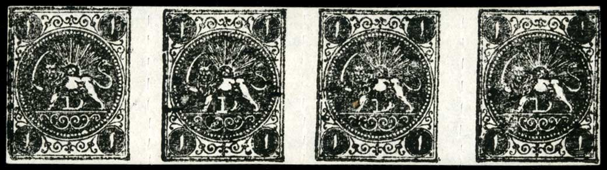
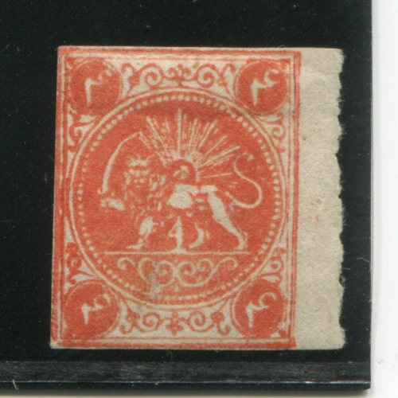
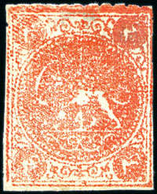
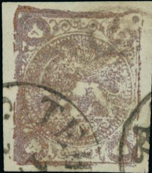
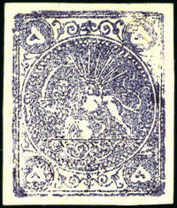
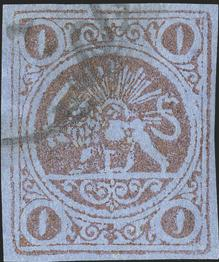

{kind=link}

Types B,C and A
Return To Catalogue - Persia 1868 issue, types, part 1, 1 ch and 2 ch - Persia 1868 issue, types, part 2, 4 ch and 8 ch - Persia (Iran) 1868 issue - Persia 1868 issue, forgeries, part 1 - Persia 1868 issue, forgeries, part 2 - Persia 1868 issue, forgeries, part 3
Note: on my website many of the
pictures can not be seen! They are of course present in the
catalogue;
contact me if you want to purchase the catalogue.
More information about stamps from Persia, forgeries etc. can be found on: http://www.persi.com/fakes/fakes/fake.html (link no longer active), http://fuchs-online.com/iran/lions-03.htm or http://www.iranphilatelic.org/scams.htm. Also the book of Friedrich Schuller 'Die Persische Post und de Postwerthzeichen von Persien und Buchara' has much information.
First stamps were printed in rows of four stamps, later also blocks of four stamps were printed.
The first stamps (without numerals between the
legs) were printed in four types. These types were based on the
five types of the Barre essays (one
type was not used).
Persia 1868 issue, types, part 1, 1 ch and
2 ch
Persia 1868 issue, types, part 2, 4 ch and
8 ch.
Rows of four stamps (printed by Mr.Mac Lachlan?):

1 ch black, all 4 types A to D, note the different '1's under the
lion. Note the rouletted perforation between the stamps.
Types B,C and A

2 ch blue, all 4 types A to D (from left to right), note the
different '2's under the lion. In type A, a break is present in
the circle surrounding the central design, just right to the
bottom central ornament (this break is already present in the
corresponding original Barre essay type).

The same types of the 2 ch blue, but in a different setting,
C,B,A and D.

2 ch black, types A,B and C.

4 Ch red, all 4 types A to D, note the different '4's under the
lion.

All four types. From left to right D, B, C and A?
 
Type D

8 ch green, all 4 types A to D, note the different '8's and the
position of these numbers under the lion and the damage of the
upper right hand side of the first stamp (type A). The second
stamp (Type B) has its upper left top corner damaged.

Types C,D,A and B (Ex Ferrary). The upper right corner of Type A
is even more damaged here.

Types A (inverted), B, D and B
Stamps, printed in blocks of four (by a local Persian printer):


Blocks of four 1 ch black stamps. Most of the stamps printed in
blocks of four appear to have the most outer frameline of the
block of four printed more heavily.
Block of four 2 ch stamps, reduced size.


2 ch blue, cut from a block of four stamps.
4 ch red, cut from a block of four.

1 Kran, reengraved types. Types B, D, C and A (different in the
numerals '1' below the lion). If my information is correct there
is a break in the upper frameline in Type A, a kink in the lower
frameline in Type B, and a smudge above the upper frameline in
type C.

1 Kran, Type A
1 K red on yellow. Types A, B, C and D.

2 ch blue, Types B,D,A and C.

4 K yellow. Types D, B, C and A

The 4 types of the 5 K stamps, A,D,C,B. The upper left stamp has
the upper right corner repaired (type A). The lower right hand
stamp has the upper left corner cut off (type B). In Type C
(bottom left), the '8' is placed above the line below it. In type
D, the '8' is resting on this line.


5 K red-bronze, types A, D, C and B as they would have appeared
in a block of four stamps.
 

Type A; defect in upper right corner.


Type B, note the white spot just above the horizontal line in the
left part of the circle. The upper left corner has been cut off.

Type C; the '8' is placed above the line below it.


1 Toman Types A, B, B and C; see also the 1 K values for similar
types. If my information is correct there is a break in the upper
frameline in Type A, a kink in the lower frameline in Type B, and
a smudge above the upper frameline in type C.
Strips of three stamps (4 K blue only)

4 K blue, poor printing. Only three types (A, C and D) were used
(type B was too badly damaged, thus this particular value was
only printed in rows of 3 stamps). The '4's are different for
each type, type A has 62 pearls, type B has 57 and type D 75
pearls (source: http://fuchs-online.com/iran/lions-11.htm).

4 K blue, even poorer printing.

4 K blue, type D

Very badly printed 4 K blue stamp, unrecognizable type.
{kind=link}
{kind=link}
{kind=link}
{kind=link}